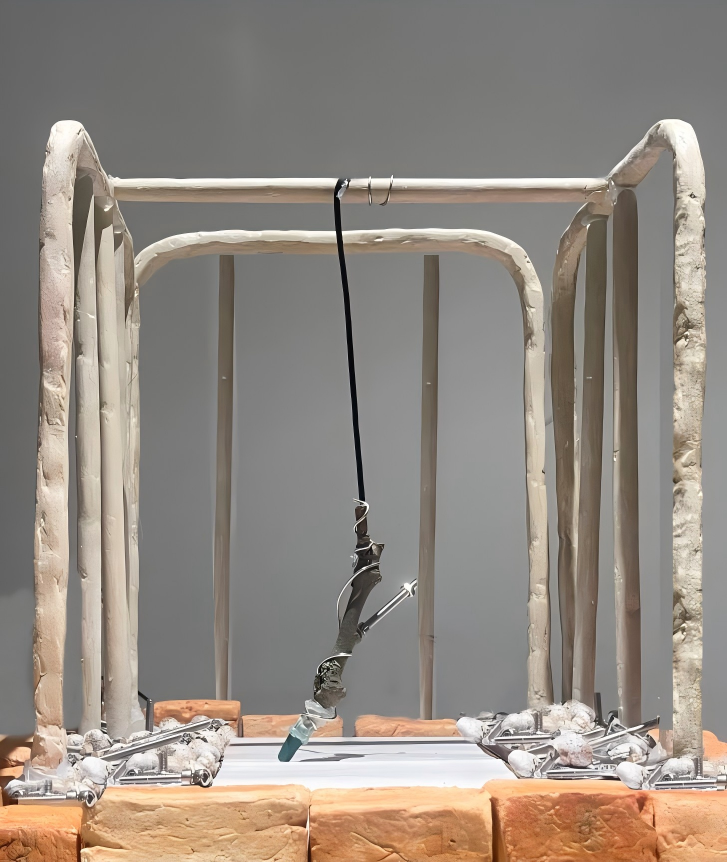
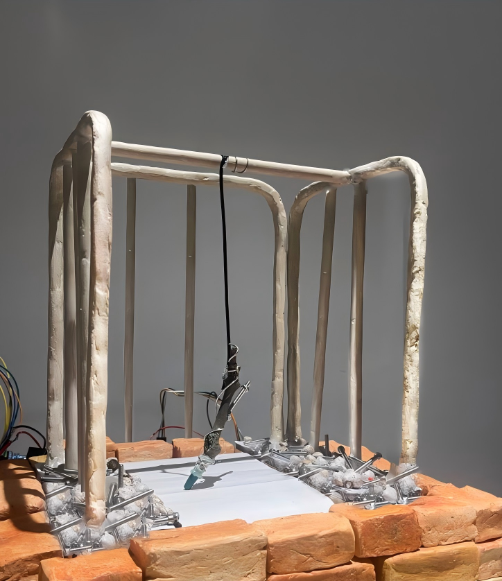
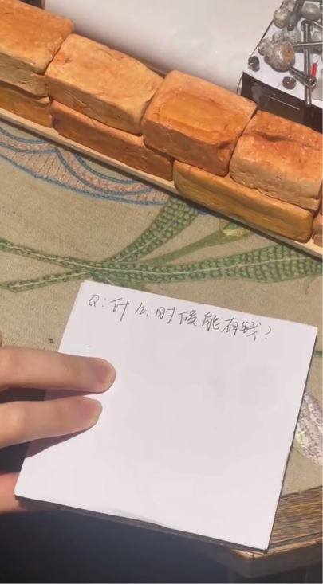
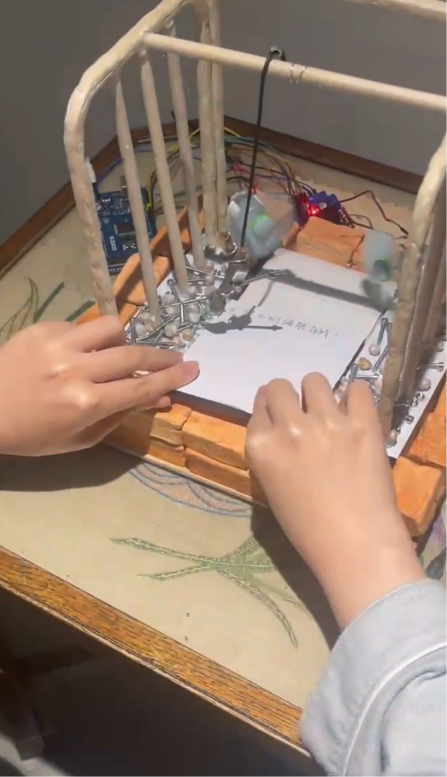
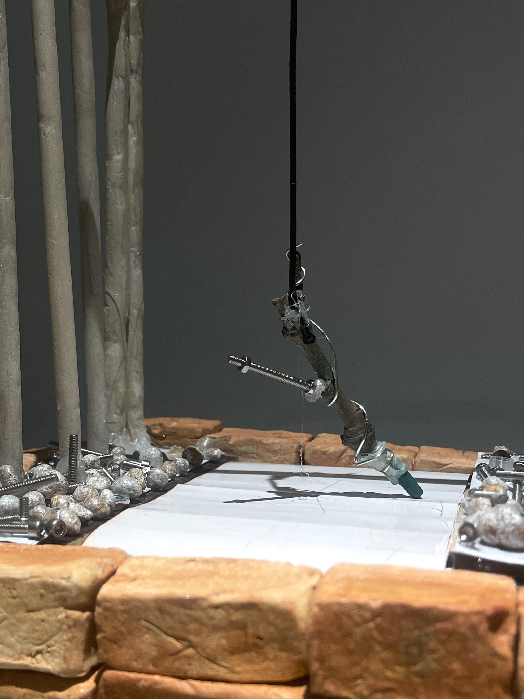

Tree's language

Tree is a quiet observer, recording what we cannot see — memories of the past and hints of the future. The tree doesn't speak, but it quietly transmits information through its annual rings, the swaying of its leaves, the sound of the wind, and the scent of its surroundings.
I hope that through this project, people can reacquaint themselves with the tree, not just as a part of nature, but as a living individual with perception and memory. They are always watching us, we just haven't learned to listen yet.



